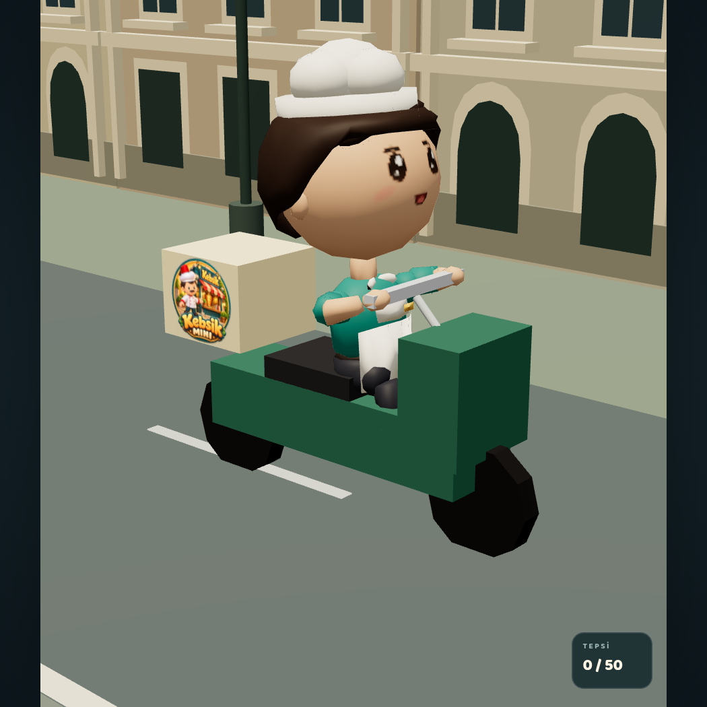
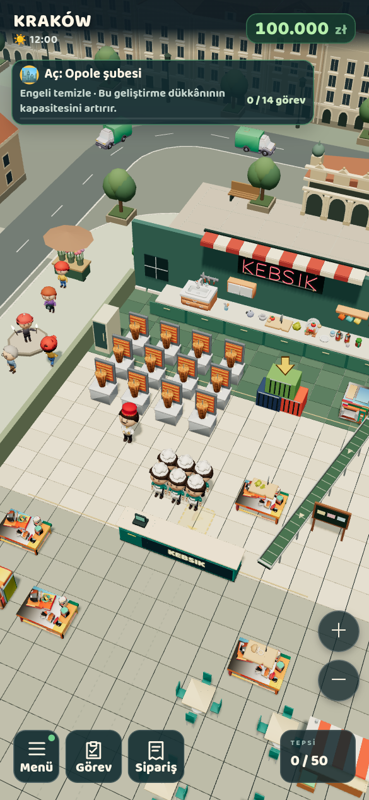
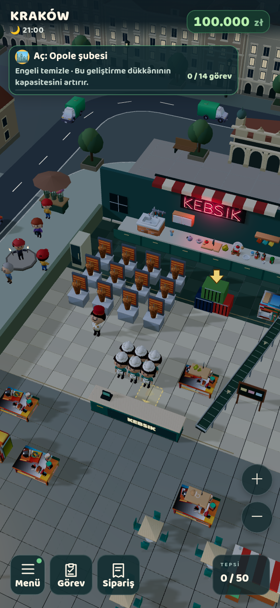

Kebsik Mini — oyun içi görüntüler
Görsele dokunarak tam boy açabilirsin.






Gerçek oyun çizimlerinden tarayıcı çekimleri. Gündüz/gece kareleri hazırlanmış 0.1.57 inceleme kaydındandır. Kurye karesi 0.1.58 çizim düzeltmesini gösterir; yakın çekimde trafik gizlenmiştir. Fiziksel telefon çekimi değildir.